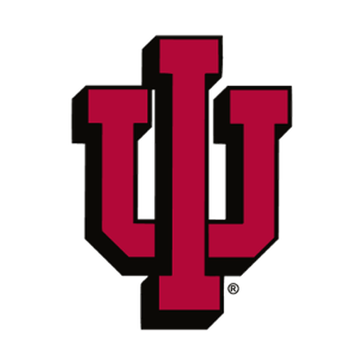
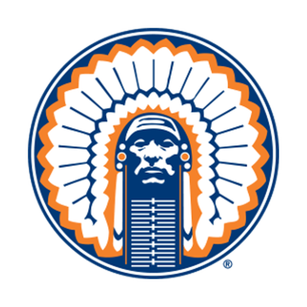
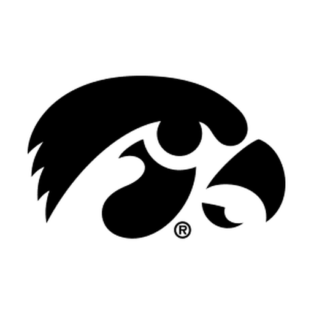
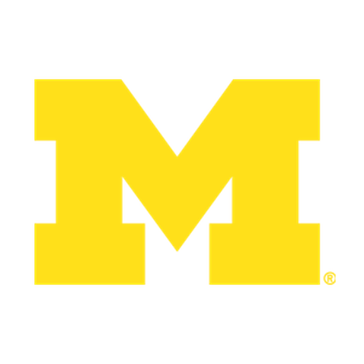
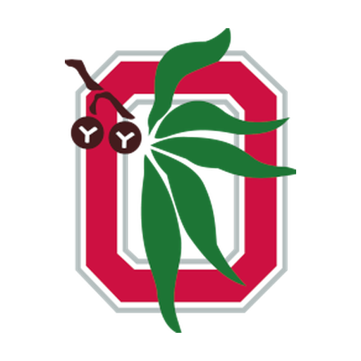
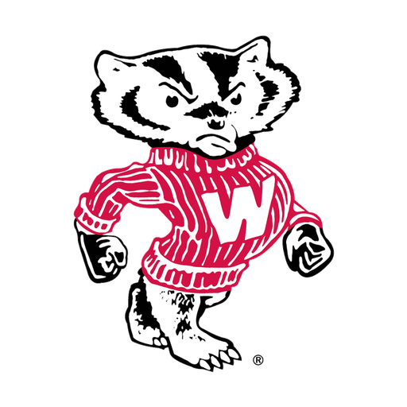

Image unavailableIndiana HoosiersArchive era: 1979–1997
1980s logos for all 18 current Big Ten schools: the original ten members and eight later arrivals, each displayed with bold double-color rings for your audit.
These are the actual archive PNGs stored locally in the newspaper repository and loaded directly by this preview. The outer and inner school-color rings are enlarged, with the full image contained inside each circle.

Image unavailableIndiana Hoosiers
Image unavailableIllinois Fighting Illini
Image unavailableIowa Hawkeyes
Image unavailableMichigan Wolverines Image unavailableMichigan State Spartans
Image unavailableMichigan State Spartans Image unavailableMinnesota Golden Gophers
Image unavailableMinnesota Golden Gophers Image unavailableNorthwestern Wildcats
Image unavailableNorthwestern Wildcats
Image unavailableOhio State Buckeyes Image unavailablePurdue Boilermakers
Image unavailablePurdue Boilermakers
Image unavailableWisconsin BadgersThese eight universities joined the Big Ten after the 1980s. Their authentic logos were used during that decade; they are not presented as Big Ten members of that era. Each image is stored locally.
 Image unavailablePenn State Nittany Lions
Image unavailablePenn State Nittany Lions Image unavailableNebraska Cornhuskers
Image unavailableNebraska Cornhuskers Image unavailableMaryland Terrapins
Image unavailableMaryland Terrapins Image unavailableRutgers Scarlet Knights
Image unavailableRutgers Scarlet Knights Image unavailableUCLA Bruins
Image unavailableUCLA Bruins Image unavailableUSC Trojans
Image unavailableUSC Trojans Image unavailableOregon Ducks
Image unavailableOregon Ducks Image unavailableWashington HuskiesImage unavailableImage unavailable
Image unavailableWashington HuskiesImage unavailableImage unavailable